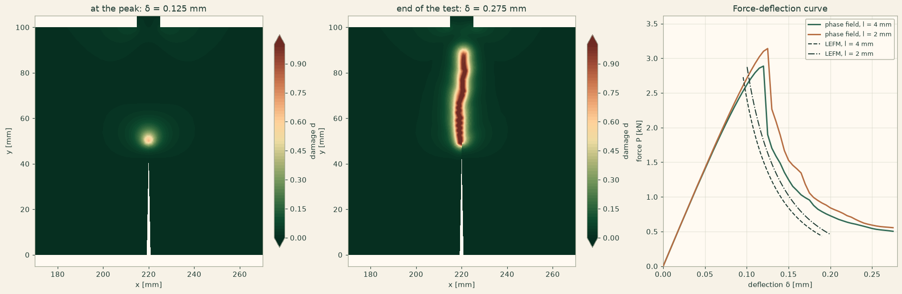
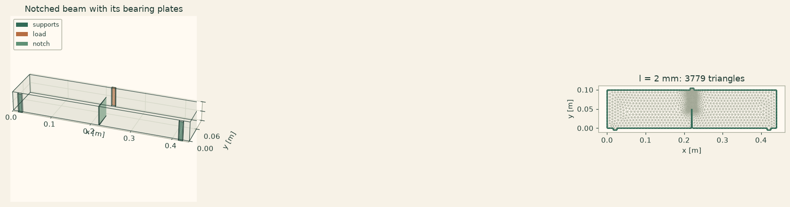

Docs › Examples › Cracking of a notched concrete beam
Fracture mechanics · 2D
Cracking of a notched concrete beam
A notched concrete beam is bent between two supports until a crack runs from the notch towards the load.
Run locally with OneSimulation. The example downloads are free. Running them requires an activated runtime. Runtime Alpha 0.2.1a7 · CPython 3.13 on macOS (Apple Silicon), Ubuntu 22.04 (x86-64), and Windows x64. Installation and activation · View pilot plans. Scope of the reference checks.

What it computes
OneSimulation reads the beam with its bearing plates from a STEP file, cuts it to its cross-section and solves the AT2 phase-field model in plane stress with a tension-compression split, so the compressed zone under the load stays intact; two regularisation lengths are compared on meshes refined along the crack path. The script that builds the STEP file comes with the notebook.
What it checks
The peak force (2.89 kN for l = 4 mm, 3.14 kN for l = 2 mm) lies 5.9 % and 9.2 % above the fracture-mechanics value of the ASTM E399 geometry factor with the mesh-corrected toughness, the crack runs straight up to 87 mm height, and the post-peak force-deflection curve follows the fracture-mechanics curve in shape.
Geometry
The notebook starts at the import of the CAD file notched_beam_phase_field.step: STEP (AP242), readable by any CAD program, with the names of the faces that the boundary conditions use. Put it next to the notebook.

The geometry script
The script notched_beam_phase_field_geometry.py builds the geometry with the CAD objects of OneSimulation and writes the file. Change a dimension there, run it, and run the notebook again.
"""Geometry of the OneSimulation example "Cracking of a notched concrete beam in three-point bending".
Builds the beam (length 440 mm, depth W = 100 mm, thickness 50 mm) with a sharp notch of depth
50 mm cut in from the bottom at mid-span, 2 mm wide at the bottom face, and three bearing plates
10 mm wide and 5 mm high: two under the supports at a span of 400 mm (left_plate, right_plate)
and one on top at mid-span (load_plate). The part is written to notched_beam_phase_field.step; the
faces keep the names of their blocks (left_plate.y_min, right_plate.y_min, load_plate.y_max, ...),
the two flanks of the notch are the face notch.side.
"""
from onesim.cad.d2 import Profile
from onesim.cad.d3 import Box, Prism
length, depth, thickness, span, notch, mouth, plate = (
0.440,
0.100,
0.050,
0.400,
0.050,
0.002,
0.010,
)
middle = length / 2
pad = lambda x, y: Box(
length=plate, width=0.005, height=thickness, origin=(x - plate / 2, y, 0.0)
)
wedge = Prism(
profile=Profile.polygon(
[(middle - mouth / 2, -0.004), (middle, notch), (middle + mouth / 2, -0.004)]
),
height=thickness,
)
beam = (
Box(length=length, width=depth, height=thickness)
| pad(middle - span / 2, -0.005).named("left_plate")
| pad(middle + span / 2, -0.005).named("right_plate")
| pad(middle, depth).named("load_plate")
) - wedge.named("notch")
beam.save("notched_beam_phase_field.step")The notebook
The complete notebook, cell by cell. Run it to produce the figures and the comparison printout.
The notched beam in three-point bending is the standard test for the fracture energy of concrete and rock. A sharp notch in the middle of the tension side concentrates the stress; at a critical load a crack starts at its tip and runs up towards the loading point.
The crack is computed with a phase-field model: a damage field \(d\in[0,1]\), smeared over a width set by the length \(\ell\), minimises together with the displacement the energy
where only the tensile part \(\psi^+\) of the strain energy drives the crack (the split of Amor, Marigo and Maurini, 2009), so the compressed zone under the load stays intact.
Setup. A concrete beam 440 mm long, depth \(W=100\) mm, thickness \(B=50\) mm, span \(S=400\) mm, with a sharp notch of depth \(a_0=50\) mm; \(E=30\) GPa, \(\nu=0.2\), \(G_c=100\) N/m, plane stress. The beam rests on two bearing plates and is pushed down through a third plate at mid-span. It comes from the CAD file notched_beam_phase_field.step, written by notched_beam_phase_field_geometry.py with the CAD objects of OneSimulation.
| face | displacement | damage | |---|---|---| | left_plate.y_min | \(u_x=u_y=0\) | zero flux | | right_plate.y_min | \(u_y=0\) | zero flux | | load_plate.y_max | \(u_y=-\delta(t)\) | zero flux | | all other faces, notch.side | traction free | zero flux |
Reference. Linear elastic fracture mechanics with the geometry factor of ASTM E399 for \(S/W=4\):
The crack grows while \(K_I=\sqrt{EG_c}\), which gives the force \(P(a)\); the compliance grows by \(\mathrm dC/\mathrm da=2S^2f^2/(BW^3E)\), which gives the deflection \(\delta=P\,C(a)\). A phase-field crack approaches this curve as \(\ell\) becomes small against the ligament; on a mesh of size \(h\) it dissipates \(G_c(1+h/2\ell)\) per unit area.
import numpy as np
from onesim.cad.exchange import load
from onesim.meshing import TriangularMesher
from onesim.physics.solid_mechanics import PhaseFieldFracture
from onesim.visualization import plots, theme
theme.set()Geometry and mesh
section cuts the beam at half thickness; the cut faces keep their names. The triangles are 1 mm in a band of \(\pm5\ell\) above the notch and grow to 8 mm away from it, one mesh per regularisation length.
beam = load("notched_beam_phase_field.step")
length, height, thickness = beam.size
plane = beam.section((0, 0, 1), origin=(0, 0, thickness / 2))
faces = plane.boundaries
middle, depth, span, notch, h, mm = length / 2, 0.100, 0.400, 0.050, 0.001, 1e-3
lengths = [4 * mm, 2 * mm]
band = lambda ell: lambda p: np.minimum(
h
+ 0.25
* np.hypot(
np.maximum(np.abs(p[:, 0] - middle) - 5 * ell, 0.0),
np.maximum(notch - 5 * mm - p[:, 1], 0.0),
),
8 * mm,
)
meshes = {
ell: TriangularMesher(target_size=8 * mm, size_field=band(ell)).generate(plane)
for ell in lengths
}
fig = plots.figure(1, 2, size=(15, 4.5))
plots.geometry(
beam,
selection={
"supports": beam.boundaries["left_plate.y_min"]
| beam.boundaries["right_plate.y_min"],
"load": beam.boundaries["load_plate.y_max"],
"notch": beam.boundaries["notch.side"],
},
labels=False,
camera=plots.Camera(elevation=28, azimuth=-70),
title="Notched beam with its bearing plates",
ax=fig[0],
)
plots.mesh(
meshes[2 * mm],
groups=("all",),
legend=False,
title=f"l = 2 mm: {meshes[2 * mm].cell_count} triangles",
ax=fig[1],
)
plots.show()Model
The loading plate moves down in 46 steps, 5 µm each around and after the peak. Each step alternates between equilibrium at fixed damage and damage at fixed displacement until the damage changes by less than \(10^{-4}\).
youngs_modulus, toughness = 30e9, 100.0
deflection = np.r_[0.0, 0.02, 0.04, 0.06, np.arange(0.065, 0.2751, 0.005)] * mm
results = {
ell: PhaseFieldFracture(
youngs_modulus=youngs_modulus,
poisson_ratio=0.2,
fracture_energy=toughness,
length_scale=ell,
thickness=thickness,
plane_stress=True,
).solve(
mesh=meshes[ell],
times=deflection,
tolerance=1e-4,
max_iterations=3000,
displacements=(
(faces["left_plate.y_min"], "x", 0.0),
(faces["left_plate.y_min"], "y", 0.0),
(faces["right_plate.y_min"], "y", 0.0),
(faces["load_plate.y_max"], "y", lambda t: -t),
),
)
for ell in lengths
}
force = {
ell: -result.reactions[
:, np.isclose(result.coordinates[:, 1], result.coordinates[:, 1].max()), 1
].sum(axis=1)
for ell, result in results.items()
}Reference: fracture mechanics
\(P(a)\) from \(K_I=\sqrt{EG_c(1+h/2\ell)}\), and the deflection from the compliance of the notched beam: its elastic value at \(a_0\) is read from the first load step, the growth is integrated from the geometry factor.
factor = (
lambda a: 3
* np.sqrt(a)
* (1.99 - a * (1 - a) * (2.15 - 3.93 * a + 2.7 * a**2))
/ (2 * (1 + 2 * a) * (1 - a) ** 1.5)
)
alpha = np.linspace(notch / depth, 0.85, 400)
lefm = {}
for ell in lengths:
critical = np.sqrt(youngs_modulus * toughness * (1 + h / (2 * ell)))
growth = np.r_[
0.0,
np.cumsum(
np.diff(alpha)
* depth
* 2
* span**2
* factor((alpha[1:] + alpha[:-1]) / 2) ** 2
/ (thickness * depth**3 * youngs_modulus)
),
]
load_on_crack = critical * thickness * depth**1.5 / (span * factor(alpha))
lefm[ell] = (
load_on_crack * (deflection[1] / force[ell][1] + growth),
load_on_crack,
)Comparison with the reference
The peak force against the fracture-mechanics value at the notch, and the energy dissipated by the end against \(G_c\) times the crack area, measured from the notch to the highest point with \(d>0.95\).
print(
f"{'l [mm]':>6s} {'triangles':>9s} {'peak force [kN]':>16s} {'LEFM, G_c':>10s} {'LEFM, G_c(1+h/2l)':>18s} {'deviation':>10s}"
f" {'crack tip y [mm]':>17s} {'dissipated / G_c(1+h/2l) A':>27s}"
)
for ell, result in results.items():
tip = result.coordinates[result.damage[-1] > 0.95, 1].max()
area = (tip - notch) * thickness
print(
f"{1e3 * ell:6.0f} {meshes[ell].cell_count:9d} {force[ell].max() / 1e3:16.3f} {lefm[ell][1][0] / np.sqrt(1 + h / (2 * ell)) / 1e3:10.3f}"
f" {lefm[ell][1][0] / 1e3:18.3f} {100 * (force[ell].max() / lefm[ell][1][0] - 1):+9.1f} % {1e3 * tip:17.1f}"
f" {result.fracture_energy[-1] / (toughness * (1 + h / (2 * ell)) * area):27.3f}"
)Figure
The damage at the peak and at the end for \(\ell=2\) mm (zoomed on the ligament), and the force-deflection curves with the fracture-mechanics curves.
main = results[2 * mm]
x, y = main.coordinates.T
shown = {
"at the peak": int(np.argmax(force[2 * mm])),
"end of the test": len(deflection) - 1,
}
fig = plots.figure(layout=[list(shown) + ["force"]], size=(17, 5.5))
for panel, step in shown.items():
plots.heatmap(
x / mm,
y / mm,
main.damage[step],
triangles=np.asarray(meshes[2 * mm].cells),
limits=(0, 1),
label="damage d",
xlabel="x [mm]",
ylabel="y [mm]",
xlimits=(170, 270),
ylimits=(-5, 105),
title=f"{panel}: δ = {1e3 * deflection[step]:.3f} mm",
ax=fig[panel],
)
plots.line(
y={
f"phase field, l = {1e3 * ell:.0f} mm": (deflection / mm, values / 1e3)
for ell, values in force.items()
},
reference={
f"LEFM, l = {1e3 * ell:.0f} mm": (curve[0] / mm, curve[1] / 1e3)
for ell, curve in lefm.items()
},
xlimits=(0, 0.28),
ylimits=(0, 1.15 * max(values.max() for values in force.values()) / 1e3),
xlabel="deflection δ [mm]",
ylabel="force P [kN]",
title="Force-deflection curve",
legend="upper right",
ax=fig["force"],
)
plots.show()Going further
Halve \(\ell\) together with the mesh size in the band: the peak moves towards the fracture-mechanics value. Make the notch shallower in notched_beam_phase_field_geometry.py and write the STEP file again; with no notch at all the beam fails at the strength \(\sigma_c=\frac{9}{16}\sqrt{EG_c/3\ell}\) of the AT2 model.